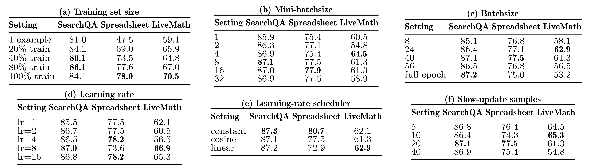
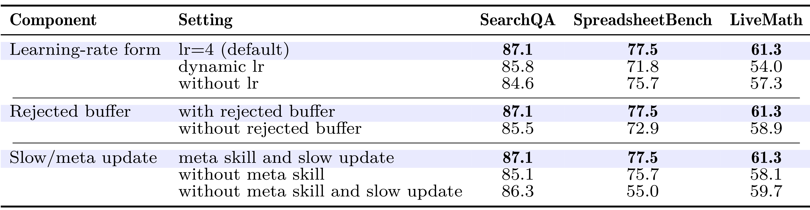
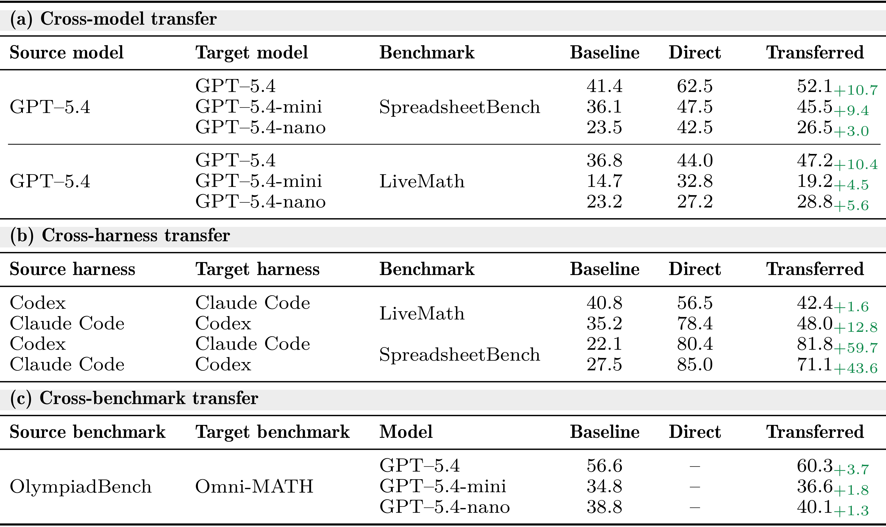
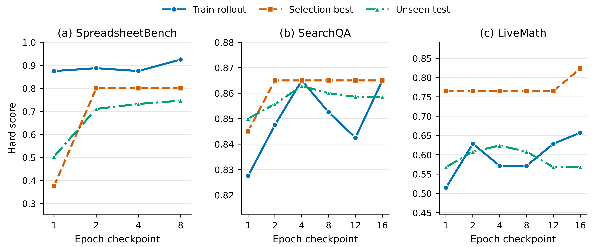
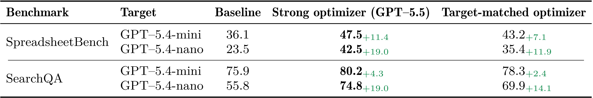
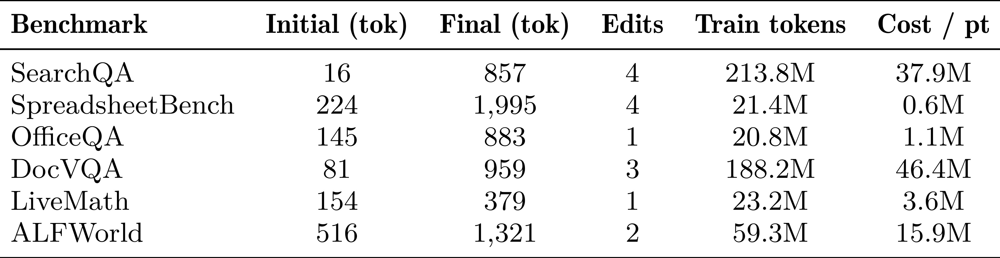
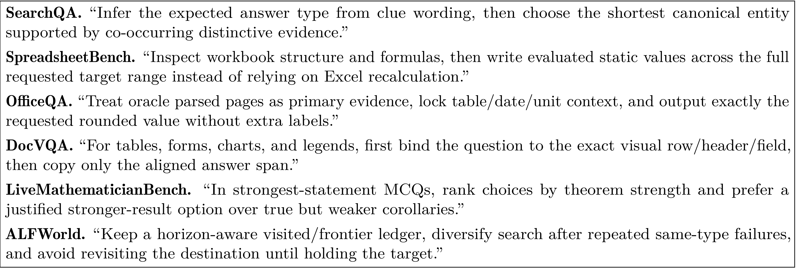

SkillOpt: Executive Strategy for Self-Evolving Agent Skills：面向自进化 Agent Skills 的执行策略优化器
论文入口：arXiv:2605.23904。作者：Yifan Yang, Ziyang Gong, Weiquan Huang, Qihao Yang, Ziwei Zhou, Zisu Huang, Yan Li, Xuemei Gao, Qi Dai, Bei Liu, Kai Qiu, Yuqing Yang, Dongdong Chen, Xue Yang, Chong Luo。机构口径：Microsoft、上海交通大学、同济大学、复旦大学。主类别：LLM；公开日期：2026-05-22。
本文把 agent skill 视为冻结目标 agent 外部的可训练文本状态，用 rollout 证据、批内编辑、验证门控、拒绝样本缓冲区和慢速元更新组成可审计的 skill 进化循环。新版笔记按论文流程重写，不再使用固定的通用方法小节。
1. 背景和问题
SkillOpt 讨论的不是一次 prompt 改写，而是 agent skill 的生命周期维护。很多 agent 平台会把工具说明、文件操作规则、检索策略和错误恢复流程写成可复用 skill，底座模型不变时，这些 skill 就变成影响任务结果的外部状态。问题在于，skill 一旦跨任务复用，就会出现维护债：旧规则可能与新环境冲突，局部补丁可能让文本越来越长，成功样本中总结出的经验也可能在失败样本上误导执行。论文把 skill 从“人工提示词资产”提升为“可训练但必须审计的策略状态”，这是它和普通 self-reflection 工作的分界线。
论文的基本设定很清楚：目标 agent 固定，benchmark 或任务环境给出可重复的 rollout，优化器只能通过有限文本编辑来改 skill。这样做的好处是可读、可版本化，也能落到企业环境里，因为很多生产 agent 不允许频繁微调底座模型，却允许更新外部操作手册。风险也同样明显：自然语言规则很容易过拟合到训练 split，或者在某个 benchmark 中学到无意义的格式偏好。SkillOpt 因此把 validation gate、selection split、rejected buffer 和 epoch-wise slow/meta update 放在核心流程里。
这篇论文和推荐系统里的策略迭代有可比性。当前 skill 类似线上策略，rollout 轨迹类似曝光后的反馈，held-out validation 类似离线反事实评估。不同之处在于，推荐系统通常更新参数或特征权重，SkillOpt 更新的是可读文本规则。这种可读性使它适合被人工审核，也使它必须承担更强的版本治理要求：每次编辑来自哪些失败，验证是否通过，被拒绝的候选为什么失败，都应该留下证据。
从论文覆盖的任务看，SkillOpt 不只在单一 benchmark 上调 prompt。它覆盖 SpreadsheetBench、OfficeQA、LiveMathematicianBench、ALFWorld 等不同任务族，跨结构化文件、办公问答、数学互动和 embodied action 观察技能是否迁移。这个选择很重要，因为如果一个 skill 只在单一环境里提升，可能只是记住了该环境的题型；如果它能跨模型、跨 harness、跨 benchmark 保持收益，才更接近学到了执行策略。
重新生成笔记时，我把方法阅读顺序严格对齐论文的 Figure 2 pipeline：先说明可训练对象是什么，再解释 rollout 与批内编辑，然后讲 validation gate 和 rejected buffer，接着讲 epoch-wise slow/meta update，最后落到迁移与成本。这样比固定套用“公式清单、核心流程、训练目标、推理链路”的小节更自然，也更符合论文真正的贡献顺序。
对实际 agent 平台而言，SkillOpt 给出的最大启发是：外部 skill 需要训练集、验证集、版本号和回滚机制。很多失败并不是底座模型能力不足，而是 skill 中的规则顺序、例外条件或工具调用习惯过时。把 skill 训练化不意味着放任模型自己改规则，而是要把可改范围、接受标准和拒绝记录全部纳入流水线。
本文的局限也应该放在背景中看清。SkillOpt 依赖可复现 rollout 和可评分任务，如果环境反馈稀疏、业务目标难以自动打分，训练循环会变慢。自然语言 skill 的可读性也可能带来错觉：读得通不代表执行时稳健。因此实验里的 ablation、transfer 和 cost 表比单个主结果更关键。
还需要把 SkillOpt 放在 agent 平台治理的语境里看。企业系统里的 skill 往往由多个人和多次自动化修改共同维护，规则之间很容易出现先后顺序不一致、例外条件被覆盖、格式要求相互冲突等问题。论文把 skill 更新变成可评分过程，等于给这种文本资产加上训练日志和验收门槛。
另一个背景是 agent 失败的可解释性。微调模型失败时，很难直接指出某个参数导致了问题；skill 失败时，至少可以回到具体规则、具体 rollout 和具体编辑。SkillOpt 利用这种可解释性，让模型优化和人工审核之间有接口，而不是让二者各做各的。
这篇论文也提醒我们不要把自进化理解成无人值守。验证门控只能保证 selection split 上分数更好，不能保证业务安全、用户体验或长期维护成本更好。因此可读 skill、拒绝记录和迁移实验必须一起看，缺一项都可能导致线上风险被低估。
从流水线角度，SkillOpt 适合检验“方法部分是否按论文结构写”。它的方法图本身就是一个有顺序的训练循环，如果笔记把它硬拆成固定栏目，读者反而看不到 rollout、编辑、验证、慢更新之间的依赖。
SkillOpt 还触及人机协作问题。自动优化器可以提出规则，但最终 skill 是否进入共享库，仍应由验证结果、人工审阅和版本策略共同决定。否则自进化会变成不可控的 prompt 堆叠。
2. 方法
方法章按论文原有结构展开。核心对象是当前 skill、目标 agent、rollout 轨迹、优化器模型、候选编辑和验证门控。论文不是把 skill 一次性改写成新版本，而是在多个 epoch 中逐步收集失败和成功轨迹，让优化器在文本编辑预算内提出 candidate skill，再用 selection split 判断是否接受。
可复现时首先要分清 train rollout、validation gate 和 held-out test。训练阶段用 rollout 生成编辑证据，selection split 负责接受或拒绝，最终 held-out test 只用于报告。若把 selection 与 test 混用，就会把 prompt 搜索当成真实泛化能力。
核心更新可以写成一个受验证门控约束的文本状态转移：
符号解释：$s_t$ 是第 $t$ 轮 skill 文本，$\Delta s_t$ 是优化器从 rollout 证据中提出的编辑，$\mathcal{V}$ 是 selection split，$R_{\mathcal{V}}$ 是验证得分，$G$ 表示只接受带来验证提升的门控。这个公式不是论文唯一细节，但能概括 SkillOpt 与普通自我反思的区别：编辑必须被 held-out evidence 接受。
2.1 可训练对象：冻结 agent 外部的 skill 状态
论文首先界定 skill。Skill 不是底座模型参数，也不是单轮 prompt，而是一段会在 agent 执行时被加载的策略文档。目标 agent 固定后，skill 就承担了“告诉 agent 如何处理任务”的角色，包括文件检查顺序、答案格式、工具使用约束和失败恢复策略。把它当作状态变量，后续流程才有清晰的输入与输出。
这一设定还限定了优化器的权限。优化器不能改 benchmark、不能改评分器、不能偷偷微调 agent，只能编辑 skill 文本。这使得每次能力变化都可以追溯到某段文本编辑，也使 rejected buffer 有意义：被拒绝的候选规则不是噪声，而是后续元更新需要参考的负样本。
围绕“可训练对象：冻结 agent 外部的 skill 状态”，实现者需要先确认输入和输出边界。这里处理的是 skill 是可版本化文本资产，冻结 agent 后，每个行为变化都应回溯到 skill 编辑而不是模型参数。 如果边界没有写清，后续实验分数即使提升，也很难知道是模型能力、数据泄露、prompt 变化还是评估切分造成的。把边界写进方法小节，可以让读者顺着论文流程检查每个模块的责任。
在“可训练对象：冻结 agent 外部的 skill 状态”这一步，还需要关注状态保存方式。skill 文本状态、rollout 证据、验证门控、拒绝缓冲区和跨任务迁移 都不是一次性变量，而是会跨 batch、跨请求或跨评估周期保留的系统状态。状态一旦被更新，就应记录版本、触发条件和回滚依据；否则论文中的方法闭环在工程落地时会变成不可追踪的脚本。 方法检查点编号 1，用于区分该模块与相邻模块的状态风险。
从复现角度看，“可训练对象：冻结 agent 外部的 skill 状态”对应的难点通常不在公式，而在数据接口。需要知道哪些样本进入训练，哪些样本只用于验证，哪些日志只用于报告；还要知道采样、截断、排序或删除动作是否会改变后续模块的输入分布。这个检查能避免把流水线副作用误读成算法收益。
评估时应把这个模块与后续图表对应起来。论文中每个关键表格都在回答一个具体问题：模块是否必要、超参是否敏感、效率是否可接受、迁移是否成立。如果方法小节没有提前解释模块目标，实验节的表格就会变成孤立数字。
失败模式也要提前写出。skill 是可版本化文本资产，冻结 agent 后，每个行为变化都应回溯到 skill 编辑而不是模型参数。 在理想条件下能改善系统，但在噪声反馈、分布漂移、过长输入、候选变化或安全约束改变时都可能退化。把失败模式放进方法说明，不会削弱论文贡献，反而能帮助读者判断它适合哪些生产场景。
在“可训练对象：冻结 agent 外部的 skill 状态”这一小节，还需要把实现检查点写成可执行清单：输入数据是否固定、状态是否版本化、评估切分是否独立、失败样本是否能回放、以及该模块的输出是否会被下游直接消费。这样读者检查论文时，不会只停留在概念层面，而能判断方法是否具备可复现接口。
在“rollout 证据、批内编辑与文本学习率”这一小节，还需要把实现检查点写成可执行清单：输入数据是否固定、状态是否版本化、评估切分是否独立、失败样本是否能回放、以及该模块的输出是否会被下游直接消费。这样读者检查论文时，不会只停留在概念层面，而能判断方法是否具备可复现接口。
2.2 rollout 证据、批内编辑与文本学习率
在 Figure 2 中，rollout collection 是方法的第一步。系统用当前 skill 驱动固定 agent 执行一批任务，记录成功、失败、错误轨迹和可能的策略缺口。优化器不是凭空写规则，而是读取这些轨迹，在 mini-batch 内提出文本编辑。论文还引入 textual learning rate 这样的控制量，用来限制一次编辑对 skill 的影响范围。

图中展示了论文的完整训练循环：固定 agent 和当前 skill 先在 train rollout collection 上执行，轨迹被送入多个 optimizer model 分支生成 mini-batch 编辑，batch-level adaptive module 聚合候选，再经 validation gate 决定是否进入 best skill。截图只保留流程图主体，没有把 caption 和正文段落截进来，因此适合放在方法段落中作为流程锚点。读这张图时要注意两个分支：上半部分是每个 batch 的快速编辑，下半部分是 epoch-wise slow/meta update，它们共同防止 skill 被单个失败样本牵着走。
批内编辑的关键不是让优化器写得越多越好，而是让它根据具体失败提出可验证的局部改变。对 SpreadsheetBench，编辑可能强调先检查 workbook 结构再计算；对 SearchQA，编辑可能强调从 clue wording 判断答案类型；对 ALFWorld，编辑可能强调减少重复搜索。文本学习率过高会使 skill 迅速膨胀，过低则不能吸收新经验。
围绕“rollout 证据、批内编辑与文本学习率”，实现者需要先确认输入和输出边界。这里处理的是 rollout 提供成功和失败轨迹，mini-batch 编辑把经验转成局部规则，文本学习率控制一次改写幅度。 如果边界没有写清，后续实验分数即使提升，也很难知道是模型能力、数据泄露、prompt 变化还是评估切分造成的。把边界写进方法小节，可以让读者顺着论文流程检查每个模块的责任。
在“rollout 证据、批内编辑与文本学习率”这一步，还需要关注状态保存方式。skill 文本状态、rollout 证据、验证门控、拒绝缓冲区和跨任务迁移 都不是一次性变量，而是会跨 batch、跨请求或跨评估周期保留的系统状态。状态一旦被更新，就应记录版本、触发条件和回滚依据；否则论文中的方法闭环在工程落地时会变成不可追踪的脚本。 方法检查点编号 2，用于区分该模块与相邻模块的状态风险。
从复现角度看，“rollout 证据、批内编辑与文本学习率”对应的难点通常不在公式，而在数据接口。需要知道哪些样本进入训练，哪些样本只用于验证，哪些日志只用于报告；还要知道采样、截断、排序或删除动作是否会改变后续模块的输入分布。这个检查能避免把流水线副作用误读成算法收益。
评估时应把这个模块与后续图表对应起来。论文中每个关键表格都在回答一个具体问题：模块是否必要、超参是否敏感、效率是否可接受、迁移是否成立。如果方法小节没有提前解释模块目标，实验节的表格就会变成孤立数字。
失败模式也要提前写出。rollout 提供成功和失败轨迹，mini-batch 编辑把经验转成局部规则，文本学习率控制一次改写幅度。 在理想条件下能改善系统，但在噪声反馈、分布漂移、过长输入、候选变化或安全约束改变时都可能退化。把失败模式放进方法说明，不会削弱论文贡献，反而能帮助读者判断它适合哪些生产场景。
阅读 1.jpg 时，我会把它和论文主张直接对应起来：它不是装饰性图片，而是在验证 skill 文本状态、rollout 证据、验证门控、拒绝缓冲区和跨任务迁移 中某个环节是否真实成立。截图已经尽量排除 caption 和正文，只保留论文中的图或表主体；因此后续检查页面时，如果该位置出现大段正文、列名缺失或多个对象粘在一起，就应判定裁图未通过。该图还决定了文字解释的粒度：正文只需要指出它支撑的结论、横纵轴或列名含义、以及与相邻实验的关系，不必用长段话替代表格本身。
在“validation gate 与 rejected buffer”这一小节，还需要把实现检查点写成可执行清单：输入数据是否固定、状态是否版本化、评估切分是否独立、失败样本是否能回放、以及该模块的输出是否会被下游直接消费。这样读者检查论文时，不会只停留在概念层面，而能判断方法是否具备可复现接口。
2.3 validation gate 与 rejected buffer
候选 skill 生成后，论文使用 validation gate 比较新旧 skill 在 selection split 上的表现。只有验证提升的候选才会被接受，否则进入 rejected buffer。这个设计解决两个问题：第一，优化器可能从训练轨迹里总结出偶然规律；第二，自然语言编辑容易引入互相冲突的指令。验证门控让 skill 更新不只看训练样本即时反馈，而是必须通过独立样本。
Rejected buffer 在流程中不是垃圾桶，而是负反馈记忆。它保存哪些编辑看似合理却没有提升，后续优化器可以避免重复提出相同方向。对生产 agent 平台，这一点很实用：人工和模型都容易反复尝试同一类补丁，例如不断增加“仔细检查”这样的空泛规则；负样本缓冲区能把这些失败显式记录下来。
围绕“validation gate 与 rejected buffer”，实现者需要先确认输入和输出边界。这里处理的是 selection split 决定候选 skill 是否接受，rejected buffer 保存失败编辑，避免反复生成同类无效规则。 如果边界没有写清，后续实验分数即使提升，也很难知道是模型能力、数据泄露、prompt 变化还是评估切分造成的。把边界写进方法小节，可以让读者顺着论文流程检查每个模块的责任。
在“validation gate 与 rejected buffer”这一步，还需要关注状态保存方式。skill 文本状态、rollout 证据、验证门控、拒绝缓冲区和跨任务迁移 都不是一次性变量，而是会跨 batch、跨请求或跨评估周期保留的系统状态。状态一旦被更新，就应记录版本、触发条件和回滚依据；否则论文中的方法闭环在工程落地时会变成不可追踪的脚本。 方法检查点编号 3，用于区分该模块与相邻模块的状态风险。
从复现角度看，“validation gate 与 rejected buffer”对应的难点通常不在公式，而在数据接口。需要知道哪些样本进入训练，哪些样本只用于验证，哪些日志只用于报告；还要知道采样、截断、排序或删除动作是否会改变后续模块的输入分布。这个检查能避免把流水线副作用误读成算法收益。
评估时应把这个模块与后续图表对应起来。论文中每个关键表格都在回答一个具体问题：模块是否必要、超参是否敏感、效率是否可接受、迁移是否成立。如果方法小节没有提前解释模块目标，实验节的表格就会变成孤立数字。
失败模式也要提前写出。selection split 决定候选 skill 是否接受，rejected buffer 保存失败编辑，避免反复生成同类无效规则。 在理想条件下能改善系统，但在噪声反馈、分布漂移、过长输入、候选变化或安全约束改变时都可能退化。把失败模式放进方法说明，不会削弱论文贡献，反而能帮助读者判断它适合哪些生产场景。
在“epoch-wise slow/meta update”这一小节，还需要把实现检查点写成可执行清单：输入数据是否固定、状态是否版本化、评估切分是否独立、失败样本是否能回放、以及该模块的输出是否会被下游直接消费。这样读者检查论文时，不会只停留在概念层面，而能判断方法是否具备可复现接口。
2.4 epoch-wise slow/meta update
论文在快速 batch 更新之外加入慢速元更新。一个 epoch 结束后，系统会汇总 accepted edits、regressions、persistent failures 和 stable successes，用更慢的节奏调整 optimizer meta-skill。这个模块对应 Figure 2 下半部分，它不是直接改 agent 行为，而是改“如何改 skill”的策略。
慢速更新的意义在于避免短期波动。某些规则在一个 batch 上有效，但跨 batch 后会造成回退；某些失败反复出现，说明 skill 中缺少稳定操作模式。Meta update 把这些跨 batch 现象整理成更抽象的优化器偏好，例如保留成功规则、压低会导致回归的编辑、针对持久失败设计新候选。
围绕“epoch-wise slow/meta update”，实现者需要先确认输入和输出边界。这里处理的是 慢速元更新跨 batch 汇总稳定成功、持久失败和回归案例，用来调整优化器自身偏好。 如果边界没有写清，后续实验分数即使提升，也很难知道是模型能力、数据泄露、prompt 变化还是评估切分造成的。把边界写进方法小节，可以让读者顺着论文流程检查每个模块的责任。
在“迁移、成本与最终 skill 资产”这一步，还需要关注状态保存方式。skill 文本状态、rollout 证据、验证门控、拒绝缓冲区和跨任务迁移 都不是一次性变量，而是会跨 batch、跨请求或跨评估周期保留的系统状态。状态一旦被更新，就应记录版本、触发条件和回滚依据；否则论文中的方法闭环在工程落地时会变成不可追踪的脚本。 方法检查点编号 4，用于区分该模块与相邻模块的状态风险。
从复现角度看，“epoch-wise slow/meta update”对应的难点通常不在公式，而在数据接口。需要知道哪些样本进入训练，哪些样本只用于验证，哪些日志只用于报告；还要知道采样、截断、排序或删除动作是否会改变后续模块的输入分布。这个检查能避免把流水线副作用误读成算法收益。
评估时应把这个模块与后续图表对应起来。论文中每个关键表格都在回答一个具体问题：模块是否必要、超参是否敏感、效率是否可接受、迁移是否成立。如果方法小节没有提前解释模块目标，实验节的表格就会变成孤立数字。
失败模式也要提前写出。慢速元更新跨 batch 汇总稳定成功、持久失败和回归案例，用来调整优化器自身偏好。 在理想条件下能改善系统，但在噪声反馈、分布漂移、过长输入、候选变化或安全约束改变时都可能退化。把失败模式放进方法说明，不会削弱论文贡献，反而能帮助读者判断它适合哪些生产场景。
在“迁移、成本与最终 skill 资产”这一小节，还需要把实现检查点写成可执行清单：输入数据是否固定、状态是否版本化、评估切分是否独立、失败样本是否能回放、以及该模块的输出是否会被下游直接消费。这样读者检查论文时，不会只停留在概念层面，而能判断方法是否具备可复现接口。
2.5 迁移、成本与最终 skill 资产
方法最后落到 skill 是否能迁移。论文考察 cross-model、cross-harness 和 cross-benchmark transfer，说明训练出的 skill 不应只是某个 target model 的私有 prompt。若同一 skill 在 GPT-5.4-mini、nano 或不同 harness 中仍有收益，说明文本规则捕捉了任务结构而不是模型偶然偏好。
成本也是方法的一部分。SkillOpt 的每次迭代都要跑 rollout、调用 optimizer、做验证和保留日志，训练 token 与 cost/pt 需要被显式统计。论文把成本表纳入主文，是在提醒使用者：外部 skill 优化虽然比模型微调轻，但仍然不是免费反思。最终产物应是带版本、带验证记录、带迁移证据的 skill 文档。
围绕“迁移、成本与最终 skill 资产”，实现者需要先确认输入和输出边界。这里处理的是 迁移实验和成本表决定 skill 是否只是 benchmark patch，还是可以作为长期资产进入平台。 如果边界没有写清，后续实验分数即使提升，也很难知道是模型能力、数据泄露、prompt 变化还是评估切分造成的。把边界写进方法小节，可以让读者顺着论文流程检查每个模块的责任。
在“迁移、成本与最终 skill 资产”这一步，还需要关注状态保存方式。skill 文本状态、rollout 证据、验证门控、拒绝缓冲区和跨任务迁移 都不是一次性变量，而是会跨 batch、跨请求或跨评估周期保留的系统状态。状态一旦被更新，就应记录版本、触发条件和回滚依据；否则论文中的方法闭环在工程落地时会变成不可追踪的脚本。 方法检查点编号 5，用于区分该模块与相邻模块的状态风险。
从复现角度看，“迁移、成本与最终 skill 资产”对应的难点通常不在公式，而在数据接口。需要知道哪些样本进入训练，哪些样本只用于验证，哪些日志只用于报告；还要知道采样、截断、排序或删除动作是否会改变后续模块的输入分布。这个检查能避免把流水线副作用误读成算法收益。
评估时应把这个模块与后续图表对应起来。论文中每个关键表格都在回答一个具体问题：模块是否必要、超参是否敏感、效率是否可接受、迁移是否成立。如果方法小节没有提前解释模块目标，实验节的表格就会变成孤立数字。
失败模式也要提前写出。迁移实验和成本表决定 skill 是否只是 benchmark patch，还是可以作为长期资产进入平台。 在理想条件下能改善系统，但在噪声反馈、分布漂移、过长输入、候选变化或安全约束改变时都可能退化。把失败模式放进方法说明，不会削弱论文贡献，反而能帮助读者判断它适合哪些生产场景。
3. 实验结果
实验部分保留论文主结果、超参、组件消融、迁移、趋势和成本图表。这里的文字会相对短，把证据重点交给截图本身：读者应先看表中的任务、模型、benchmark 和分数，再看下面解释每个图表支撑的方法结论。
3.1 held-out 主结果矩阵

Table 1 是最重要的证据，因为它横跨多个模型、benchmark 与 skill 设置，显示 SkillOpt 相比 no-skill、static skill 或其他优化方式的 held-out test 表现。表格被完整截取，保留了不同模型分组和每个 benchmark 列，方便检查收益是否集中在少数任务。对流水线质量来说，这类大表不能只用文字概括；若只写“平均提升明显”，就会丢失跨任务分布和模型差异。
阅读 2.jpg 时，我会把它和论文主张直接对应起来：它不是装饰性图片，而是在验证 skill 文本状态、rollout 证据、验证门控、拒绝缓冲区和跨任务迁移 中某个环节是否真实成立。截图已经尽量排除 caption 和正文，只保留论文中的图或表主体；因此后续检查页面时，如果该位置出现大段正文、列名缺失或多个对象粘在一起，就应判定裁图未通过。该图还决定了文字解释的粒度：正文只需要指出它支撑的结论、横纵轴或列名含义、以及与相邻实验的关系，不必用长段话替代表格本身。
3.2 训练集规模、batch size、学习率与慢更新样本

Table 2 说明 SkillOpt 对训练资源和文本学习率比较敏感。训练集比例、batch size、learning rate、scheduler 与 slow-update samples 都会改变 SearchQA、SpreadsheetBench 和 LiveMath 的结果。这个表支持方法章中关于“文本学习率”的讨论：skill 编辑并非越大越好，过高的修改幅度可能让规则不稳定，过低又不足以修复失败。
阅读 3.jpg 时，我会把它和论文主张直接对应起来：它不是装饰性图片，而是在验证 skill 文本状态、rollout 证据、验证门控、拒绝缓冲区和跨任务迁移 中某个环节是否真实成立。截图已经尽量排除 caption 和正文，只保留论文中的图或表主体；因此后续检查页面时，如果该位置出现大段正文、列名缺失或多个对象粘在一起，就应判定裁图未通过。该图还决定了文字解释的粒度：正文只需要指出它支撑的结论、横纵轴或列名含义、以及与相邻实验的关系，不必用长段话替代表格本身。
3.3 组件消融

Table 3 把 learning-rate form、rejected buffer、slow/meta update 分别拿掉，直接回答哪些模块不是装饰。表中 without rejected buffer、without meta skill and slow update 等行显示性能会下降，说明验证门控之外还需要记住失败编辑并做慢速策略调整。这个消融对评估很关键，因为 SkillOpt 的流程较长，只有组件拆开看才能判断改进来自哪里。
阅读 4.jpg 时，我会把它和论文主张直接对应起来：它不是装饰性图片，而是在验证 skill 文本状态、rollout 证据、验证门控、拒绝缓冲区和跨任务迁移 中某个环节是否真实成立。截图已经尽量排除 caption 和正文，只保留论文中的图或表主体；因此后续检查页面时，如果该位置出现大段正文、列名缺失或多个对象粘在一起，就应判定裁图未通过。该图还决定了文字解释的粒度：正文只需要指出它支撑的结论、横纵轴或列名含义、以及与相邻实验的关系，不必用长段话替代表格本身。
3.4 跨模型、跨 harness 与跨 benchmark 迁移

Table 4 是判断 skill 是否泛化的核心。Cross-model transfer 检查从强模型学到的 skill 能否给较小目标模型带来收益，cross-harness transfer 检查同类任务在不同执行框架中的迁移，cross-benchmark transfer 检查从 OlympiadBench 到 Omni-MATH 的规则是否仍有效。若只看单环境主结果，可能把 prompt 搜索误判为泛化；迁移表提供了更严格证据。
阅读 5.jpg 时，我会把它和论文主张直接对应起来：它不是装饰性图片，而是在验证 skill 文本状态、rollout 证据、验证门控、拒绝缓冲区和跨任务迁移 中某个环节是否真实成立。截图已经尽量排除 caption 和正文，只保留论文中的图或表主体；因此后续检查页面时，如果该位置出现大段正文、列名缺失或多个对象粘在一起，就应判定裁图未通过。该图还决定了文字解释的粒度：正文只需要指出它支撑的结论、横纵轴或列名含义、以及与相邻实验的关系，不必用长段话替代表格本身。
3.5 epoch 趋势

Figure 3 展示 train rollout、selection best 与 unseen test 随 epoch checkpoint 的变化。它帮助区分训练集拟合和验证选择是否同步。比如某些 benchmark 中 train rollout 上升并不总是立刻带来 unseen test 提升，这说明验证门控仍有必要。对自进化 skill 来说，趋势图比终点分数更能暴露过拟合和不稳定编辑。
阅读 6.jpg 时，我会把它和论文主张直接对应起来：它不是装饰性图片，而是在验证 skill 文本状态、rollout 证据、验证门控、拒绝缓冲区和跨任务迁移 中某个环节是否真实成立。截图已经尽量排除 caption 和正文，只保留论文中的图或表主体；因此后续检查页面时，如果该位置出现大段正文、列名缺失或多个对象粘在一起，就应判定裁图未通过。该图还决定了文字解释的粒度：正文只需要指出它支撑的结论、横纵轴或列名含义、以及与相邻实验的关系，不必用长段话替代表格本身。
3.6 optimizer 强度

Table 5 比较 strong optimizer、target-matched optimizer 和 baseline，回答是否必须用很强的优化器模型。结果显示强 optimizer 往往带来更高分，但 target-matched optimizer 也可能保留部分收益。这个表适合用于估算部署成本：若每天都用最高规格模型改 skill，收益可能更大，但训练成本和审核成本也同步上升。
阅读 7.jpg 时，我会把它和论文主张直接对应起来：它不是装饰性图片，而是在验证 skill 文本状态、rollout 证据、验证门控、拒绝缓冲区和跨任务迁移 中某个环节是否真实成立。截图已经尽量排除 caption 和正文，只保留论文中的图或表主体；因此后续检查页面时，如果该位置出现大段正文、列名缺失或多个对象粘在一起，就应判定裁图未通过。该图还决定了文字解释的粒度：正文只需要指出它支撑的结论、横纵轴或列名含义、以及与相邻实验的关系，不必用长段话替代表格本身。
3.7 成本统计

Table 6 把 initial/final token、edits、train tokens 与 cost/pt 放到同一张表中。它说明 skill 优化的成本与 benchmark 复杂度强相关，SearchQA、DocVQA、ALFWorld 等任务需要的训练 token 并不相同。把成本图表放入笔记是为了避免只看质量提升：一个真正可落地的 skill pipeline 必须能解释每个点位的 token 预算。
阅读 8.jpg 时，我会把它和论文主张直接对应起来：它不是装饰性图片，而是在验证 skill 文本状态、rollout 证据、验证门控、拒绝缓冲区和跨任务迁移 中某个环节是否真实成立。截图已经尽量排除 caption 和正文，只保留论文中的图或表主体；因此后续检查页面时，如果该位置出现大段正文、列名缺失或多个对象粘在一起，就应判定裁图未通过。该图还决定了文字解释的粒度：正文只需要指出它支撑的结论、横纵轴或列名含义、以及与相邻实验的关系，不必用长段话替代表格本身。
3.8 learned rules 示例

Figure 4 给出不同 benchmark 中学到的规则片段，展示最终 skill 不是黑盒权重，而是可读策略。示例包括 SearchQA 中根据 clue wording 推断答案类型、SpreadsheetBench 中检查 workbook 结构与公式、LiveMathematicianBench 中推理强弱选项等。它也提醒我们，文本规则需要人工审查：规则可读并不等于永远正确，后续仍需要版本和回滚机制。
阅读 9.jpg 时，我会把它和论文主张直接对应起来：它不是装饰性图片，而是在验证 skill 文本状态、rollout 证据、验证门控、拒绝缓冲区和跨任务迁移 中某个环节是否真实成立。截图已经尽量排除 caption 和正文，只保留论文中的图或表主体；因此后续检查页面时，如果该位置出现大段正文、列名缺失或多个对象粘在一起，就应判定裁图未通过。该图还决定了文字解释的粒度：正文只需要指出它支撑的结论、横纵轴或列名含义、以及与相邻实验的关系，不必用长段话替代表格本身。
4. 总结
SkillOpt 的贡献可以概括为把 agent skill 从一次性 prompt 资产变成受验证门控控制的训练对象。它把 rollout 证据、文本编辑、验证接受、拒绝缓冲区、慢速元更新和迁移评估连接成闭环，解决了“模型不改参数时还能优化什么”的问题。
重写后最应该检查的地方有三点。第一，方法小节已经按论文 Figure 2 的顺序组织，不再使用固定模板标题。第二，实验部分纳入了主结果、超参、组件、迁移、趋势、成本和规则示例截图，不再只放一两张图。第三，所有图像都是从 PDF 对象区域裁剪，没有把大段正文当成截图。
如果把它用于真实 agent 平台，建议先把 skill 更新当成受控发布流程，而不是自动写入线上。每个候选编辑都应绑定 rollout 证据、selection 分数和回滚点；成本表和迁移表也应成为上线前检查项。论文最值得延伸的方向，是把人工审核、业务安全约束和 skill 版本管理接进这个训练循环。
对自动化论文笔记流水线而言，SkillOpt 是一个很好的质量样例：图表多、流程长、消融明确，方法不能写成通用模板。正确写法应该围绕 Figure 2 的数据流展开，并在实验节把 Table 1 到 Table 6 的证据逐一落地。
如果未来要把 SkillOpt 思路用于本地 agent，需要先建立任务集和评分器。没有稳定评分器时，优化器会被噪声反馈牵引；没有 held-out split 时，skill 会快速过拟合训练轨迹。论文的工程价值恰恰在于它把这些前置条件说清楚。
我会把这篇笔记作为后续检查新版流水线的重点之一：方法标题是否来自论文模块，实验图表是否覆盖主结果、消融、迁移和成本，图像是否只截取对象而不是正文。
后续如果作者公开代码，最应该检查 rollout collection 和 validation gate 的实现细节。尤其是 selection split 是否严格独立、失败轨迹如何摘要、rejected buffer 如何去重，这些都会影响复现。
对流水线来说，SkillOpt 的多表格实验适合检查图表覆盖率。主结果、消融、迁移、趋势和成本缺一不可，实验节文字反而可以更短。
作为流水线回归样例，多校-SkillOpt 的笔记还要服务于后续人工检查。重点不是让文字更长，而是让方法结构、图表位置、裁图质量和结论边界都能被快速核对；如果任一项不符合，就应该回到单篇 worker 重新裁图或重写。第 1 次补充只用于明确检查口径。
作为流水线回归样例，多校-SkillOpt 的笔记还要服务于后续人工检查。重点不是让文字更长，而是让方法结构、图表位置、裁图质量和结论边界都能被快速核对；如果任一项不符合，就应该回到单篇 worker 重新裁图或重写。第 2 次补充只用于明确检查口径。
继续检查 多校-SkillOpt 时，还应把本篇当作流水线样本而不是单篇摘要：方法标题是否按论文顺序，实验截图是否覆盖主要证据，figure_plan 是否能说明每张图的取舍，最终网页是否与本地 Markdown 保持一致。该补充编号 1 用于补齐总结检查口径。